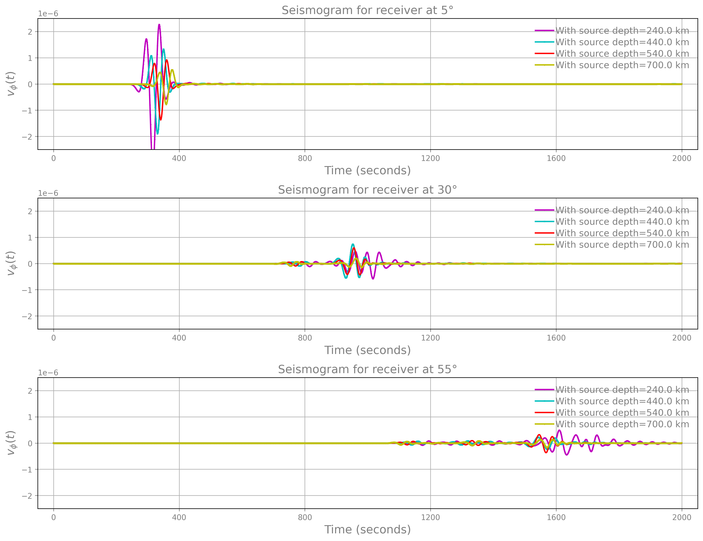

(3): Multi-forcing via rank-2¶
Before you start
Below we assume you already completed one of the builds described in the build tab. For simplicity, look at the serial step-by-step build guide.
For the sake of demonstration, this demo solves the same problem described in the rank-1 demo, except that here we use the rank-2 formulation, which allows us to simulate several trajectories simultaneously.
Prepare environment¶
export ESWSRCDIR=<fullpath-to-the-source-code-repository>
export SHAWEXEDIR=<fullpath-to-where-you-built-the-code-executables>
# create a dir to run the demo
export MYRUNDIR=${HOME}/myThirdDemo
mkdir -p ${MYRUNDIR}
Generating the mesh¶
This is identical to the mesh used in this demo:
cd ${ESWSRCDIR}/meshing
python create_single_mesh.py -nr 256 -nth 1024 -working-dir ${MYRUNDIR}
Input file¶
The input file is identical to the one for the rank-1 demo,
except for the addition of one line to the source section:
#
# general, io, material: as in the other demo
#
source:
signal:
# kind, depth, period, delay: same as the other one
# ...
# forcingSize defines how many simultaneous trajectories to compute
forcingSize: 4
The full input file can be copied:
cp ${ESWSRCDIR}/demos/fom_rank2_sample_depth/input.yaml ${MYRUNDIR}
Run the simulation¶
cd ${MYRUNDIR}
ln -s ${SHAWEXEDIR}/shawExe .
./shawExe input.yaml
To give an idea of runtime, on a MacPro with 2.4 GHz 8-Core Intel Core i9 and 32 GB 2667 MHz DDR4, and using a serial build of the code, the run takes approximately 107 seconds, of which the IO time for data collection is less than 1 second. Note that this already gives a hint to the advantages of using the rank-2 formulation. In fact, while here it takes 107 seconds to simulate the four trajectories simultaneously, in the rank-1 version of this demo it took about 150 seconds to simulate the same realizations.
Simulation data¶
The demo should generate inside ${MYRUNDIR} the following:
coords_sp.txt #: coordinates of the velocity grid points
coords_vp.txt #: oordinates of the stresses grid points
# seismogram for all forcing realizations at the receiver locations
# the input file set the format to be ascii
# since we have 8 receivers and 4 sample depths, the file generated is as follows:
# rows 1-8 : seismogram for each station when source depth=240 Km
# rows 9-16 : seismogram for each station when source depth=440 Km
# rows 17-24: seismogram for each station when source depth=540 Km
# rows 25-32: seismogram for each station when source depth=700 Km
seismogram_0
snaps_vp_0 #: snapshot matrix for the velocity for all realizations
snaps_sp_0 #: snapshot matrix for the stresses for all realizations
Post-process data¶
To post-process the data, get the Python scripts created for this demo and visualize the seismogram:
cd ${MYRUNDIR}
cp ${ESWSRCDIR}/demos/fom_rank2_sample_depth/plotSeismogram.py .
python plotSeismogram.py
Which generates a figure identical to the seismogram plot obtained with the rank-1 (as expected) since here we solve the sample problem just in a different, more efficient way.
